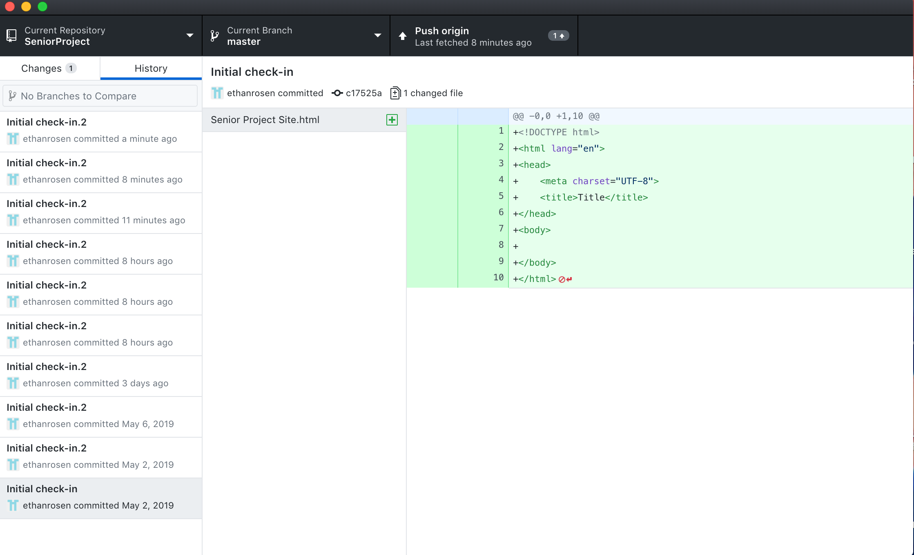
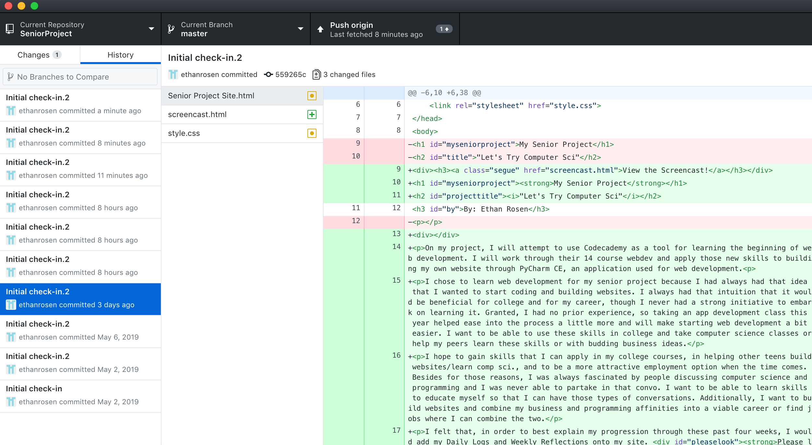
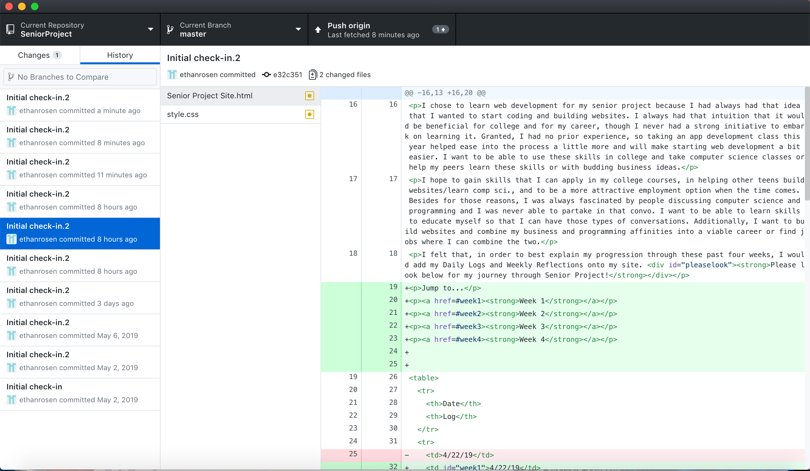
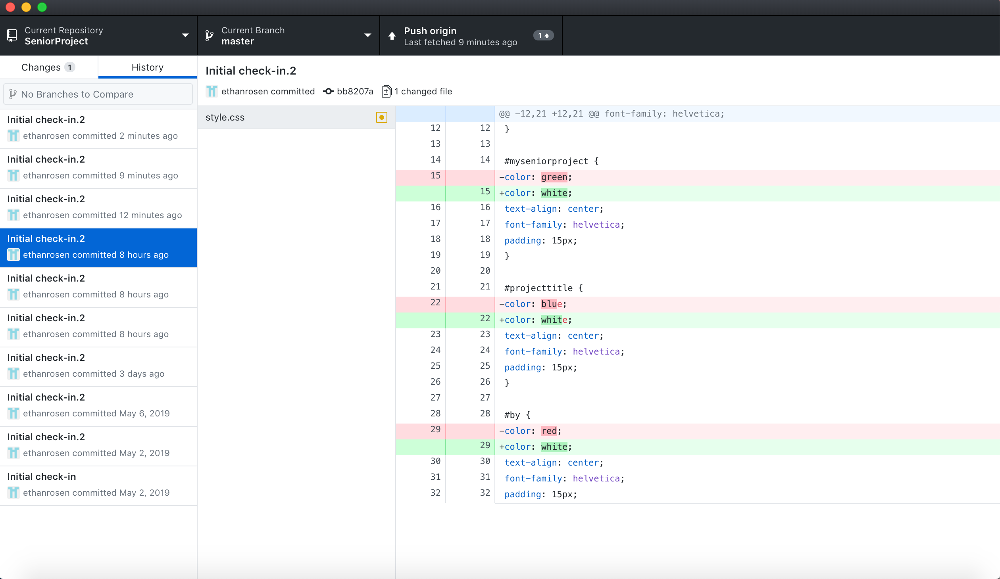

In my first screenshot, you can see the basic workins of my code. This was when I first started on Github/my website so everything is in green, which signifies new additions.
In this screenshot, I omitted a few elements, which is therefore shown in red. Additionally, I added a lot of new features, such as a table containing all of my daily logs. To view that table in its entirety, click here!
The most notable change in my third screenshot is the addition of the lines containing "href=#weekx". If you look back at my landing page, there are four hyperlinks: week 1, week 2, and so on. The creation of this "href" allows you to click that text to be transported to the first daily log of that respective week!
In my last screenshot, I deviate a bit from the typical HTML – which is what I showed in the earlier pictures – and worked on my CSS, which stands for Custom Style Sheets. CSS is responsible for the aesthetic of the website - all the alignments, fonts, colors and the like. In this screenshot, specifically, I changed the colors of a few text elements within the various IDs on my page. IDs can be used as specific references to elements and/or parts on the page. Besides for the features edited in the picture, you can also see the attributes of "text-align", "font-family", and "padding" added in.
